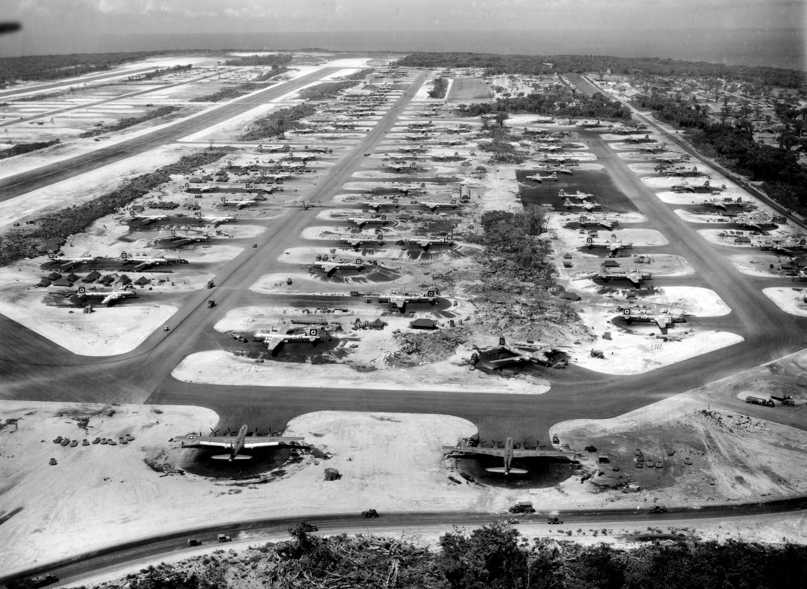

Guam North Field
Guam · June–July 1945
June opened with clippings from home about Lt. Handwerker and the B-29 City of Memphis. Austin was glad they had the story — and careful about what it meant. Handwerker’s airplane was on the same field; the newspaper, he had already said in May, had leaned on a colonel from Memphis who had nothing to do with naming that ship. His own airplane remained City of Charlottesville. Osaka again on 1 June; Kobe with flak through the nose glass and a landing at Iwo; another Osaka run of more than twenty-three hours. By 10 June the letterhead itself could say Guam.
Dearest Mother And Sis, Received your letter today & the clipping of Lt. Handwerker and the City of Memphis. Was glad you got it and sent it to me. […] Yesterday I was on the mission to Osaka. That's the second time that we have bombed that city. Once was on March 14 and it was my second mission. […] I wish I could send you a picture of our plane now. It has 20 bombing missions now. A bomb with the name of the target for each mission. Also 3 Jap flags for 3 enemy fighters destroyed. […] Love to all, Austin
Historical note — City of Memphis and City of CharlottesvilleTwo named B-29s on the Guam field are easy to confuse in family memory. City of Memphis was Lt. Handwerker’s airplane; Austin’s May and June letters correct newspaper accounts that mixed a Memphis colonel into that story. City of Charlottesville (Virginia) was the ship Austin flew with Cook’s crew for most of his early missions — later he would note twenty-two of his sorties in that one airplane, unusual longevity for a combat Superfortress. When he received a crew of his own in July, they named a newer airplane City of Annapolis after the bombardier’s hometown, Memphis having “already been taken.”

Censorship of the place-name Guam lifted in June. Austin swam, sat proficiency exams, stood censorship and guard details, and on 15 June — anniversary of the first B-29 strike on Japan — flew Osaka again after General Arnold spoke on the field. By early July City of Charlottesville led the squadron in missions flown; Austin had put twenty-two of his own into that airplane before Cook, now operations officer, gave him a new crew and the best new airplane on the field.
Dear Mother & Sis, How's everything? Well Yesterday I went back to OSAKA. June 15th was the anniversary of the 1st B-29 Bombing of Japan. I suppose you heard General Arnold's announcement from Guam on the raid. The General was on the field here the day before the raid and gave a little talk to all the Pilots. […] Love Austin
Hello Mother & Sis, […] Here's a bit of news, Capt. Handwercker. He came in this morning. He's' been training in the states at a Head Crew school. He will be leading some of our formation flights now. That's what Cook and I used to do when we were together. You know Cook is our Operations officer and he gave me the new plane. I asked him for it. Its the best and newes plane on the field. We named it City of Annapolis. After Annapolis Maryland. My bombardier lives there. It seems like nobody on our crew lived in any big cities except him. If Memphis hadn't already been taken I'd have used that. But thought as well let someone in our crew get some benefit from naming it. […] Love, Austin
Historical note — North Field, Guam, summer 1945North Field (later Andersen Air Force Base) on Guam hosted several Very Heavy bomb groups of the 314th Bomb Wing, including the 19th. By mid-1945 missions of fourteen to sixteen hours were routine; damaged airplanes still diverted to Iwo. Gen. Henry H. “Hap” Arnold, commanding general of the Army Air Forces, visited the Marianas that June. Mission totals toward thirty-five — the local tour length Austin expected — fill the letter headings through July.
On 21 July a parade presented awards. Austin received the Air Medal and an oak-leaf cluster; another Tennessean stood with him for photographs. He mailed the medal home with shell jewelry. By month’s end he had a second oak-leaf cluster, twenty-eight missions, and was checking out his co-pilot from the left seat so the crew could continue when he finished.
Dear Mother & Sis, A few lines before bedtime. Today we had a parade & ceremony. "Presentation of Awards" I received my Air Medal & an Oak Leaf Cluster to the Air medal. They took pictures of us. One other fellow from Tennessee received the Air Medal today also. […] Love to all, Austin
Historical note — Air MedalThe Air Medal recognized meritorious achievement in flight. Oak-leaf clusters denoted additional awards of the same medal rather than issuing the medal again. Austin had explained the cluster system to Cherry in June; the July ceremony made it metal he could wrap and send home.